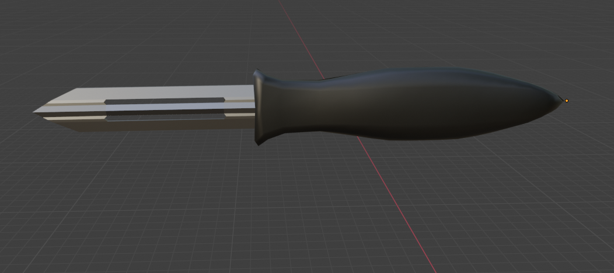
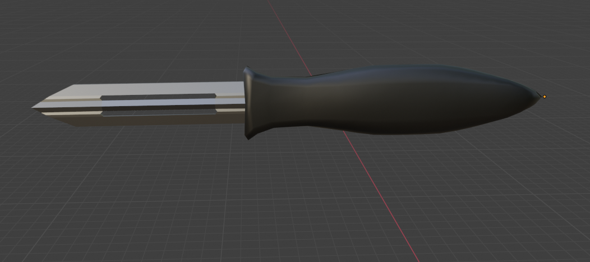

Not Wizard, un nom qui ne définit pas qui nous sommes mais qui nous ne sommes pas.
Not Wizard, un nom qui ne définit pas qui nous sommes mais qui nous ne sommes pas.
Retrouvez ici les éléments ajoutés et modifiés concernant la map, les entités et le menu du jeu.
La map va regrouper tous les modèles 3D faits par les membres du groupe. Ce sera l'endroit où les joueurs pourront se déplacer et où se déroulera tout le scénario. Notre jeu comportera plusieurs maps différentes.

Avant de commencer à jouer, les joueurs pourront avoir un tutoriel pour se familiariser avec les touches et l'univers de Khonba !
La map du jeu â d'abord été une simple cuisine moderne.

Nous avons ensuite décidé d'agrandir la carte en la transformant en un rez-de-chaussée complet. Cela a pris beaucoup de temps car chaque élément a été précieusement réalisé par nos membres.
Nous présenterons les différentes entités terrifiantes présentes dans Khonba mais aussi le personnage principal. Et j'espère qu'elles vont vous plaire !
 

Le couteau et l'économe sont des ennemis basiques.
La friteuse est un boss du jeu qu'on rencontrera à la fin du niveau.
Vous serez informés de tous les changements apportés au menu du jeu.

.png)
Nous tentons de rendre le menu le plus agréable à voir pour les joueurs.